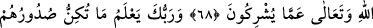
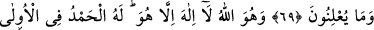
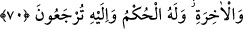

RABBIN,
DİLEDİĞİNİ SEÇER
VE YARATIR
68. Rabbin, dilediğini yaratır ve seçer. Onların seçim hakkı yoktur. Allah, onların
ortak koştuklarından münezzehtir ve şânı yücedir.
69. Rabbin, onların, sînelerinde gizlediklerini de, açığa vurduklarını da bilir.
70. İşte O, Allah’tır. O’ndan başka tanrı yoktur. Önünde de, sonunda da hamd
O’nundur, hüküm O’nundur. Ve ancak O’na döndürüleceksiniz.
“Rabbin, dilediğini yaratır ve seçer. Onların seçim hakkı yoktur.”
Rivâyete göre Arap uluları, Allah, peygamber olarak niçin Muhammed’i seçti; böyle
bir mevki için Mekke’nin ulusu olan Velîd bin Mugîre veya Tâif’in en büyüğü Urve bin
Mes’ûd-i Sakafî daha uygundu, şeklinde sitem ediyorlardı.
Mekke müşrikleri “Bu Kur’an iki şehirden, bir büyük adama indirilse olmaz
mıydı?” (ez-Zuhruf, 43/31) deyince yukarıdaki âyet nâzil oldu.
Yani Rabbin, yaratmak istediğini yaratır; yarattığı şeylerden de seçmek istediğini
seçer. Yaratmak O’na âid olduğu gibi, yarattıklarından dilediğini seçmek de O’na
âiddir.
Âyetin bu kısmı, müşriklerin peygamber olarak Velîd ve Muğîre’yi seçmelerini red ve
nefyetmek içindir. Şöyle bir şiir inşad ettiler:
Kul, sıkıntı sâhibi; Rabb kader ve hüküm sâhibidir.
Zaman nöbetleşedir; rızk paylaşılmıştır.
Hayır, yaradanımızın seçtiğinde daha câmî ve kapsayıcıdır.
Başkasının seçtiğinde ise kınama ve uğursuzluk vardır.
Cüneyd (k.s.) der ki: Kulun nasıl bir ihtiyârı/seçimi olur?! O’nun muhtârı/seçilmişi
Allah’tır.
Âriflerden biri demiştir ki: “Marifet ehli, Allah’ın kendilerine lutfettiği ve onlar için